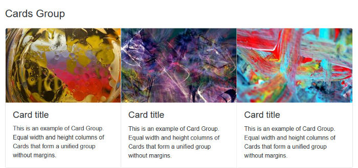
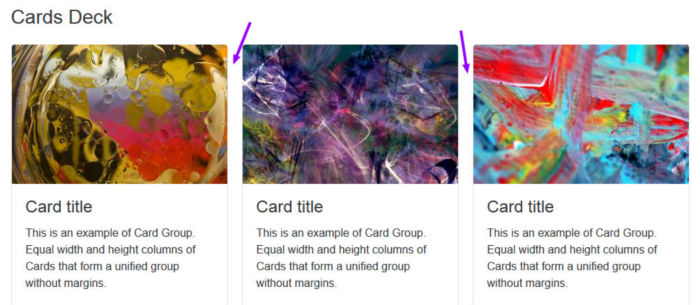
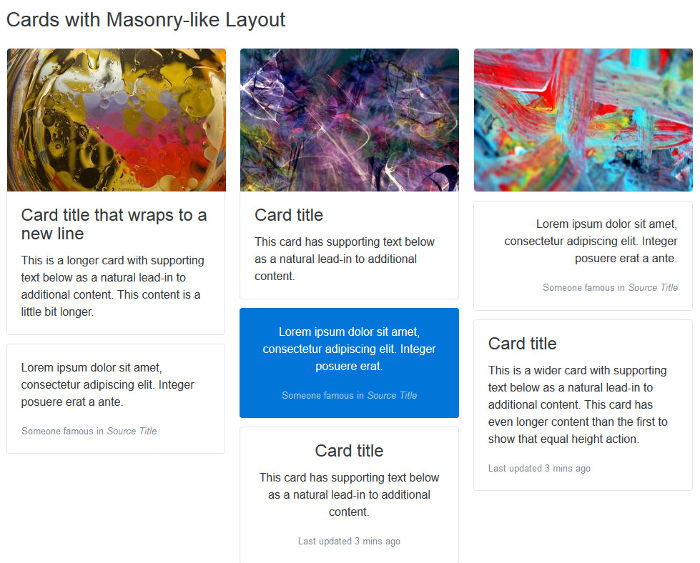

The first stable release of Bootstrap 4 is here. And it's pretty cool. This article looks at some of its best features.
It was on 19th August, 2015, that Bootstrap 4 alpha was finally out. This was after months of anticipation, anxious tweets asking for the disclosure of a release date, and a few scattered scraps of news by Mark Otto and Jacob Thornton, having the effect of intensifying rather than quenching our curiosity. More than two years later, the wait for the first stable release is finally over.
As a designer, I love crafting my own CSS. However, I confess that I find Bootstrap a well thought out and strongly supported front-end framework that I’ve immensely enjoyed using — both for building my projects and for learning more about writing better, modular CSS.
As soon as news of the latest release was out, I downloaded the source files for Bootstrap 4 and spent some time going back and forth between reading the docs and digging into the code to find out more.
Here are the latest Bootstrap features I like the most. I hope you find them awesome too!
The Bootstrap documentation has been exemplary since the framework’s early days. It’s always had the crucial role of being a living document — that is, a tool in sync with the collaborative effort of building the framework and communicating it to others:
Abstracting and documenting components became part of our process for building this one tool and Bootstrap in tandem. — Mark Otto in 2012
Mark himself is quite a fan of great documentation. His Code Guide by @mdo is evidence of his attitude that high-quality documentation is part and parcel of writing high-quality code.
The documentation for version 4 has been rewritten from scratch using Markdown, and its appearance has been revamped with a new layout, color palette, and the use of system fonts.
The Bootstrap docs:
Finally, if you’d like to run the Bootstrap docs locally on your computer, follow these instructions.
Bootstrap has often been the target of complaints about code bloat, too opinionated CSS styling, and a profuse quantity of components. The good news is that Bootstrap 4 has both simplified and further modularized its structure.
To begin with, some components have been eliminated altogether. The Glyphicons icon library is not bundled with the framework any more. Panels, wells, and thumbnails are replaced by the Cards component. Also, all CSS reset/normalize code and basic styling are now dealt with in a single brand new module called Reboot.
It’s safe to say that, now more than ever before, using Bootstrap feels like assembling and arranging Lego blocks in different ways. Here are some examples to clarify what I mean.
Bootstrap’s Sass variables use the !default flag, which makes it easy for you to override their values. Grab a copy of the latest release of Bootstrap source files and open _variables.scss in a code editor. Here are just three of the first variables you’ll come across:
$white:#fff !default;
$gray-100: #f8f9fa !default;
$gray-200: #e9ecef !default;
$gray-300: #dee2e6 !default;
These are color variables, which you can override by simply copying and pasting the variables to your own Sass file, changing the default value, and removing the !default flag. No need to mess with the original Bootstrap source code.
Besides bootstrap.scss, which includes the entire framework, you’ll also find bootstrap-grid.scss and bootstrap-reboot.scss.
Each of these files includes only selected portions of Bootstrap. If you don’t need the full-blown framework in your project, this is a great head-start: just compile one of the light-weight options and you’re good to go.
Corresponding cut-down compiled packages are available for download from the Bootstrap 4 docs page.
You can skin and modify components by mixing and matching a few classes. For instance, the brand new cards component is a great example of this versatility in action.
Here’s all the HTML you need for the simplest instance of this component:
<div class="card">
<div class="card-body">
This is some text within a card body.
</div>
</div>
This flexible component easily adapts to a variety of content types and layouts. For instance, you can also arrange cards in touching equal width and height columns by wrapping them in a .card-group container:
<div class="card-group">
<div class="card">
<!-- card code here -->
</div>
<div class="card">
<!-- card code here -->
</div>
<div class="card">
<!-- card code here -->
</div>
</div>

Alternatively, you can group cards having equal width and height columns with margins, using the .card-deck class as follows:
<div class="card-deck">
<div class="card">
<!-- card code here -->
</div>
<div class="card">
<!-- card code here -->
</div>
<div class="card">
<!-- card code here -->
</div>
</div>

Another cool thing you can do with cards is build a Masonry-like layout. Just wrap the cards in a container with the .card-columns class and leave the rest to Bootstrap:
<div class="card-columns">
<div class="card">
<!-- card code here -->
</div>
</div>

Here I’ve offered only a few examples of Bootstrap’s modular architecture. I think these suffice to show how flexibility and extensibility are built into the framework as a whole, which makes it fun and convenient to use.
Since version 3, Bootstrap has introduced a mobile-first approach to web design. That is, start developing for smaller screens first and progressively add or adjust features as you target larger screens.
Version 4 makes further improvements towards adaptive web design by taking the following steps.
Bootstrap now uses Flexbox to build its grid system.
Since Flexbox is natively flexible, coding a responsive page layout is going to require fewer classes. For instance, to achieve a layout with three columns side by side on larger screens and stacked on top of each other on small screens, just add the col-sm class to each column div:
<div class="container">
<div class="row">
<div class="col-sm">
One of three columns
</div>
<div class="col-sm">
One of three columns
</div>
<div class="col-sm">
One of three columns
</div>
</div>
</div>
remWhere earlier versions of Bootstrap set px as the absolute unit of measurement, version 4 mostly uses the relative units rem and em. The goal is to have all elements on a web page harmoniously scale with the screen size.
For instance, if you dig into _variables.scss, you’ll see that $font-size-base is set to 1rem, which assumes the browser’s default font-size (usually equivalent to 16px). Bootstrap uses this variable’s value to set the font-size for the document’s <body> (see _reboot.scss).
This means that it’s easier to build web pages where all elements proportionally scale up or down with the screen size without messing up your design.
The introduction of the new extra large breakpoint for the grid system further helps building layouts that scale well across different screen sizes.
This breakpoint is applied using the .col-xl- class and is triggered on screen sizes from 1200px upwards.
Forcing consistent spacing between elements in a design is something most front-end developers, including myself, obsess over. It’s a tricky task and the plethora of screen resolutions available doesn’t make the job easier.
To help keep both vertical and horizontal spacing between elements under tight control, Bootstrap 4 resets margin-top to 0 while keeping a consistent margin-bottom value on all elements.
Further, the framework offers an impressive number of utility classes to make it easier for you to adjust margins and paddings at a more granular level across varying screen sizes.
I’ve introduced three broad features that in my view make Bootstrap really stand out:
Did you notice I didn’t mention Bootstrap’s move from Less to Sass? Or the rewrite of all JavaScript plugins in ES6?
I consider these to be more like indications of Bootstrap staying current and taking advantage of the latest tools, rather than features integral to the framework itself.